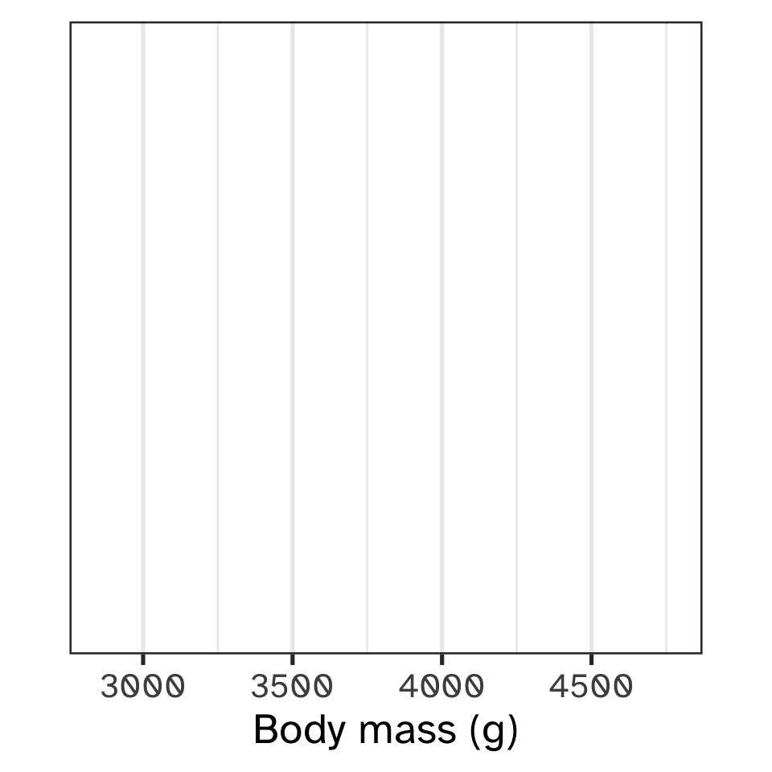
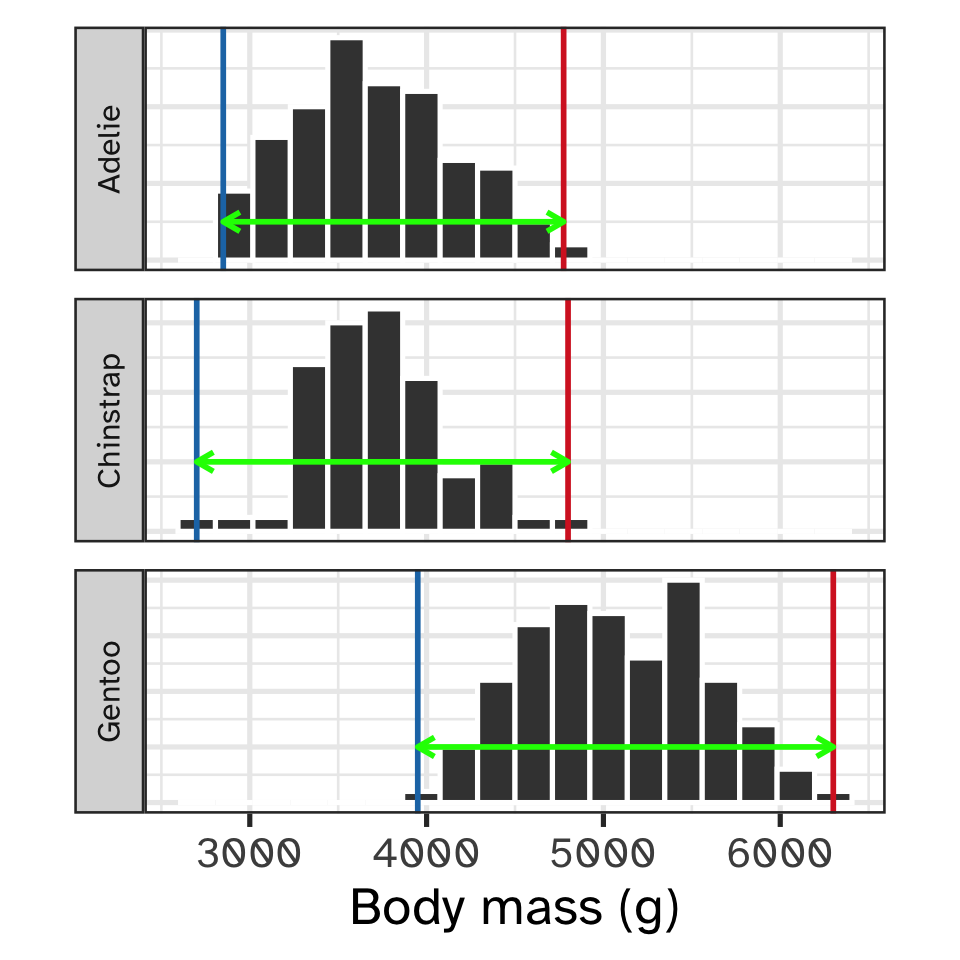
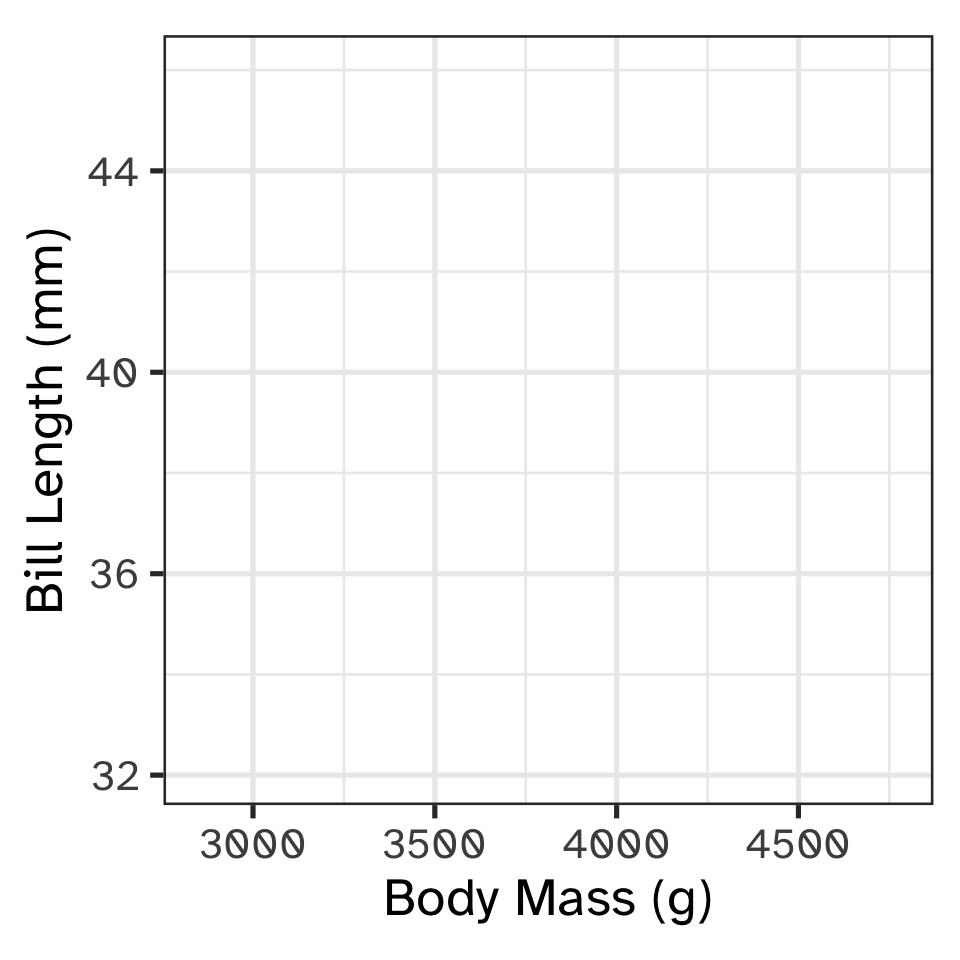

Data, plots and descriptive statistics
Lecture 2
Iain R. Moodie
BIOB11 - Experimental design and analysis for biologists
Department of Biology, Lund University
Tuesday 24th March, 2026
WORK IN PROGRESS
Slides may change before actual lecture.
Data
Data
Palmer penguins

Data
Palmer penguins (observations)
| species | island | bill_length_mm | bill_depth_mm | flipper_length_mm | body_mass_g | sex | year |
|---|---|---|---|---|---|---|---|
| Adelie | Torgersen | 39.1 | 18.7 | 181 | 3750 | male | 2007 |
| Adelie | Torgersen | 39.5 | 17.4 | 186 | 3800 | female | 2007 |
| Adelie | Torgersen | 40.3 | 18.0 | 195 | 3250 | female | 2007 |
| Adelie | Torgersen | NA | NA | NA | NA | NA | 2007 |
| Adelie | Torgersen | 36.7 | 19.3 | 193 | 3450 | female | 2007 |
| Adelie | Torgersen | 39.3 | 20.6 | 190 | 3650 | male | 2007 |
| Adelie | Torgersen | 38.9 | 17.8 | 181 | 3625 | female | 2007 |
| Adelie | Torgersen | 39.2 | 19.6 | 195 | 4675 | male | 2007 |
| Adelie | Torgersen | 34.1 | 18.1 | 193 | 3475 | NA | 2007 |
| Adelie | Torgersen | 42.0 | 20.2 | 190 | 4250 | NA | 2007 |
| Adelie | Torgersen | 37.8 | 17.1 | 186 | 3300 | NA | 2007 |
| Adelie | Torgersen | 37.8 | 17.3 | 180 | 3700 | NA | 2007 |
| Adelie | Torgersen | 41.1 | 17.6 | 182 | 3200 | female | 2007 |
| Adelie | Torgersen | 38.6 | 21.2 | 191 | 3800 | male | 2007 |
| Adelie | Torgersen | 34.6 | 21.1 | 198 | 4400 | male | 2007 |
| Adelie | Torgersen | 36.6 | 17.8 | 185 | 3700 | female | 2007 |
| Adelie | Torgersen | 38.7 | 19.0 | 195 | 3450 | female | 2007 |
| Adelie | Torgersen | 42.5 | 20.7 | 197 | 4500 | male | 2007 |
| Adelie | Torgersen | 34.4 | 18.4 | 184 | 3325 | female | 2007 |
| Adelie | Torgersen | 46.0 | 21.5 | 194 | 4200 | male | 2007 |
| Adelie | Biscoe | 37.8 | 18.3 | 174 | 3400 | female | 2007 |
| Adelie | Biscoe | 37.7 | 18.7 | 180 | 3600 | male | 2007 |
| Adelie | Biscoe | 35.9 | 19.2 | 189 | 3800 | female | 2007 |
| Adelie | Biscoe | 38.2 | 18.1 | 185 | 3950 | male | 2007 |
| Adelie | Biscoe | 38.8 | 17.2 | 180 | 3800 | male | 2007 |
| Adelie | Biscoe | 35.3 | 18.9 | 187 | 3800 | female | 2007 |
| Adelie | Biscoe | 40.6 | 18.6 | 183 | 3550 | male | 2007 |
| Adelie | Biscoe | 40.5 | 17.9 | 187 | 3200 | female | 2007 |
| Adelie | Biscoe | 37.9 | 18.6 | 172 | 3150 | female | 2007 |
| Adelie | Biscoe | 40.5 | 18.9 | 180 | 3950 | male | 2007 |
| Adelie | Dream | 39.5 | 16.7 | 178 | 3250 | female | 2007 |
| Adelie | Dream | 37.2 | 18.1 | 178 | 3900 | male | 2007 |
| Adelie | Dream | 39.5 | 17.8 | 188 | 3300 | female | 2007 |
| Adelie | Dream | 40.9 | 18.9 | 184 | 3900 | male | 2007 |
| Adelie | Dream | 36.4 | 17.0 | 195 | 3325 | female | 2007 |
| Adelie | Dream | 39.2 | 21.1 | 196 | 4150 | male | 2007 |
| Adelie | Dream | 38.8 | 20.0 | 190 | 3950 | male | 2007 |
| Adelie | Dream | 42.2 | 18.5 | 180 | 3550 | female | 2007 |
| Adelie | Dream | 37.6 | 19.3 | 181 | 3300 | female | 2007 |
| Adelie | Dream | 39.8 | 19.1 | 184 | 4650 | male | 2007 |
| Adelie | Dream | 36.5 | 18.0 | 182 | 3150 | female | 2007 |
| Adelie | Dream | 40.8 | 18.4 | 195 | 3900 | male | 2007 |
| Adelie | Dream | 36.0 | 18.5 | 186 | 3100 | female | 2007 |
| Adelie | Dream | 44.1 | 19.7 | 196 | 4400 | male | 2007 |
| Adelie | Dream | 37.0 | 16.9 | 185 | 3000 | female | 2007 |
| Adelie | Dream | 39.6 | 18.8 | 190 | 4600 | male | 2007 |
| Adelie | Dream | 41.1 | 19.0 | 182 | 3425 | male | 2007 |
| Adelie | Dream | 37.5 | 18.9 | 179 | 2975 | NA | 2007 |
| Adelie | Dream | 36.0 | 17.9 | 190 | 3450 | female | 2007 |
| Adelie | Dream | 42.3 | 21.2 | 191 | 4150 | male | 2007 |
| Adelie | Biscoe | 39.6 | 17.7 | 186 | 3500 | female | 2008 |
| Adelie | Biscoe | 40.1 | 18.9 | 188 | 4300 | male | 2008 |
| Adelie | Biscoe | 35.0 | 17.9 | 190 | 3450 | female | 2008 |
| Adelie | Biscoe | 42.0 | 19.5 | 200 | 4050 | male | 2008 |
| Adelie | Biscoe | 34.5 | 18.1 | 187 | 2900 | female | 2008 |
| Adelie | Biscoe | 41.4 | 18.6 | 191 | 3700 | male | 2008 |
| Adelie | Biscoe | 39.0 | 17.5 | 186 | 3550 | female | 2008 |
| Adelie | Biscoe | 40.6 | 18.8 | 193 | 3800 | male | 2008 |
| Adelie | Biscoe | 36.5 | 16.6 | 181 | 2850 | female | 2008 |
| Adelie | Biscoe | 37.6 | 19.1 | 194 | 3750 | male | 2008 |
| Adelie | Biscoe | 35.7 | 16.9 | 185 | 3150 | female | 2008 |
| Adelie | Biscoe | 41.3 | 21.1 | 195 | 4400 | male | 2008 |
| Adelie | Biscoe | 37.6 | 17.0 | 185 | 3600 | female | 2008 |
| Adelie | Biscoe | 41.1 | 18.2 | 192 | 4050 | male | 2008 |
| Adelie | Biscoe | 36.4 | 17.1 | 184 | 2850 | female | 2008 |
| Adelie | Biscoe | 41.6 | 18.0 | 192 | 3950 | male | 2008 |
| Adelie | Biscoe | 35.5 | 16.2 | 195 | 3350 | female | 2008 |
| Adelie | Biscoe | 41.1 | 19.1 | 188 | 4100 | male | 2008 |
| Adelie | Torgersen | 35.9 | 16.6 | 190 | 3050 | female | 2008 |
| Adelie | Torgersen | 41.8 | 19.4 | 198 | 4450 | male | 2008 |
| Adelie | Torgersen | 33.5 | 19.0 | 190 | 3600 | female | 2008 |
| Adelie | Torgersen | 39.7 | 18.4 | 190 | 3900 | male | 2008 |
| Adelie | Torgersen | 39.6 | 17.2 | 196 | 3550 | female | 2008 |
| Adelie | Torgersen | 45.8 | 18.9 | 197 | 4150 | male | 2008 |
| Adelie | Torgersen | 35.5 | 17.5 | 190 | 3700 | female | 2008 |
| Adelie | Torgersen | 42.8 | 18.5 | 195 | 4250 | male | 2008 |
| Adelie | Torgersen | 40.9 | 16.8 | 191 | 3700 | female | 2008 |
| Adelie | Torgersen | 37.2 | 19.4 | 184 | 3900 | male | 2008 |
| Adelie | Torgersen | 36.2 | 16.1 | 187 | 3550 | female | 2008 |
| Adelie | Torgersen | 42.1 | 19.1 | 195 | 4000 | male | 2008 |
| Adelie | Torgersen | 34.6 | 17.2 | 189 | 3200 | female | 2008 |
| Adelie | Torgersen | 42.9 | 17.6 | 196 | 4700 | male | 2008 |
| Adelie | Torgersen | 36.7 | 18.8 | 187 | 3800 | female | 2008 |
| Adelie | Torgersen | 35.1 | 19.4 | 193 | 4200 | male | 2008 |
| Adelie | Dream | 37.3 | 17.8 | 191 | 3350 | female | 2008 |
| Adelie | Dream | 41.3 | 20.3 | 194 | 3550 | male | 2008 |
| Adelie | Dream | 36.3 | 19.5 | 190 | 3800 | male | 2008 |
| Adelie | Dream | 36.9 | 18.6 | 189 | 3500 | female | 2008 |
| Adelie | Dream | 38.3 | 19.2 | 189 | 3950 | male | 2008 |
| Adelie | Dream | 38.9 | 18.8 | 190 | 3600 | female | 2008 |
| Adelie | Dream | 35.7 | 18.0 | 202 | 3550 | female | 2008 |
| Adelie | Dream | 41.1 | 18.1 | 205 | 4300 | male | 2008 |
| Adelie | Dream | 34.0 | 17.1 | 185 | 3400 | female | 2008 |
| Adelie | Dream | 39.6 | 18.1 | 186 | 4450 | male | 2008 |
| Adelie | Dream | 36.2 | 17.3 | 187 | 3300 | female | 2008 |
| Adelie | Dream | 40.8 | 18.9 | 208 | 4300 | male | 2008 |
| Adelie | Dream | 38.1 | 18.6 | 190 | 3700 | female | 2008 |
| Adelie | Dream | 40.3 | 18.5 | 196 | 4350 | male | 2008 |
| Adelie | Dream | 33.1 | 16.1 | 178 | 2900 | female | 2008 |
| Adelie | Dream | 43.2 | 18.5 | 192 | 4100 | male | 2008 |
| Adelie | Biscoe | 35.0 | 17.9 | 192 | 3725 | female | 2009 |
| Adelie | Biscoe | 41.0 | 20.0 | 203 | 4725 | male | 2009 |
| Adelie | Biscoe | 37.7 | 16.0 | 183 | 3075 | female | 2009 |
| Adelie | Biscoe | 37.8 | 20.0 | 190 | 4250 | male | 2009 |
| Adelie | Biscoe | 37.9 | 18.6 | 193 | 2925 | female | 2009 |
| Adelie | Biscoe | 39.7 | 18.9 | 184 | 3550 | male | 2009 |
| Adelie | Biscoe | 38.6 | 17.2 | 199 | 3750 | female | 2009 |
| Adelie | Biscoe | 38.2 | 20.0 | 190 | 3900 | male | 2009 |
| Adelie | Biscoe | 38.1 | 17.0 | 181 | 3175 | female | 2009 |
| Adelie | Biscoe | 43.2 | 19.0 | 197 | 4775 | male | 2009 |
| Adelie | Biscoe | 38.1 | 16.5 | 198 | 3825 | female | 2009 |
| Adelie | Biscoe | 45.6 | 20.3 | 191 | 4600 | male | 2009 |
| Adelie | Biscoe | 39.7 | 17.7 | 193 | 3200 | female | 2009 |
| Adelie | Biscoe | 42.2 | 19.5 | 197 | 4275 | male | 2009 |
| Adelie | Biscoe | 39.6 | 20.7 | 191 | 3900 | female | 2009 |
| Adelie | Biscoe | 42.7 | 18.3 | 196 | 4075 | male | 2009 |
| Adelie | Torgersen | 38.6 | 17.0 | 188 | 2900 | female | 2009 |
| Adelie | Torgersen | 37.3 | 20.5 | 199 | 3775 | male | 2009 |
| Adelie | Torgersen | 35.7 | 17.0 | 189 | 3350 | female | 2009 |
| Adelie | Torgersen | 41.1 | 18.6 | 189 | 3325 | male | 2009 |
| Adelie | Torgersen | 36.2 | 17.2 | 187 | 3150 | female | 2009 |
| Adelie | Torgersen | 37.7 | 19.8 | 198 | 3500 | male | 2009 |
| Adelie | Torgersen | 40.2 | 17.0 | 176 | 3450 | female | 2009 |
| Adelie | Torgersen | 41.4 | 18.5 | 202 | 3875 | male | 2009 |
| Adelie | Torgersen | 35.2 | 15.9 | 186 | 3050 | female | 2009 |
| Adelie | Torgersen | 40.6 | 19.0 | 199 | 4000 | male | 2009 |
| Adelie | Torgersen | 38.8 | 17.6 | 191 | 3275 | female | 2009 |
| Adelie | Torgersen | 41.5 | 18.3 | 195 | 4300 | male | 2009 |
| Adelie | Torgersen | 39.0 | 17.1 | 191 | 3050 | female | 2009 |
| Adelie | Torgersen | 44.1 | 18.0 | 210 | 4000 | male | 2009 |
| Adelie | Torgersen | 38.5 | 17.9 | 190 | 3325 | female | 2009 |
| Adelie | Torgersen | 43.1 | 19.2 | 197 | 3500 | male | 2009 |
| Adelie | Dream | 36.8 | 18.5 | 193 | 3500 | female | 2009 |
| Adelie | Dream | 37.5 | 18.5 | 199 | 4475 | male | 2009 |
| Adelie | Dream | 38.1 | 17.6 | 187 | 3425 | female | 2009 |
| Adelie | Dream | 41.1 | 17.5 | 190 | 3900 | male | 2009 |
| Adelie | Dream | 35.6 | 17.5 | 191 | 3175 | female | 2009 |
| Adelie | Dream | 40.2 | 20.1 | 200 | 3975 | male | 2009 |
| Adelie | Dream | 37.0 | 16.5 | 185 | 3400 | female | 2009 |
| Adelie | Dream | 39.7 | 17.9 | 193 | 4250 | male | 2009 |
| Adelie | Dream | 40.2 | 17.1 | 193 | 3400 | female | 2009 |
| Adelie | Dream | 40.6 | 17.2 | 187 | 3475 | male | 2009 |
| Adelie | Dream | 32.1 | 15.5 | 188 | 3050 | female | 2009 |
| Adelie | Dream | 40.7 | 17.0 | 190 | 3725 | male | 2009 |
| Adelie | Dream | 37.3 | 16.8 | 192 | 3000 | female | 2009 |
| Adelie | Dream | 39.0 | 18.7 | 185 | 3650 | male | 2009 |
| Adelie | Dream | 39.2 | 18.6 | 190 | 4250 | male | 2009 |
| Adelie | Dream | 36.6 | 18.4 | 184 | 3475 | female | 2009 |
| Adelie | Dream | 36.0 | 17.8 | 195 | 3450 | female | 2009 |
| Adelie | Dream | 37.8 | 18.1 | 193 | 3750 | male | 2009 |
| Adelie | Dream | 36.0 | 17.1 | 187 | 3700 | female | 2009 |
| Adelie | Dream | 41.5 | 18.5 | 201 | 4000 | male | 2009 |
| Gentoo | Biscoe | 46.1 | 13.2 | 211 | 4500 | female | 2007 |
| Gentoo | Biscoe | 50.0 | 16.3 | 230 | 5700 | male | 2007 |
| Gentoo | Biscoe | 48.7 | 14.1 | 210 | 4450 | female | 2007 |
| Gentoo | Biscoe | 50.0 | 15.2 | 218 | 5700 | male | 2007 |
| Gentoo | Biscoe | 47.6 | 14.5 | 215 | 5400 | male | 2007 |
| Gentoo | Biscoe | 46.5 | 13.5 | 210 | 4550 | female | 2007 |
| Gentoo | Biscoe | 45.4 | 14.6 | 211 | 4800 | female | 2007 |
| Gentoo | Biscoe | 46.7 | 15.3 | 219 | 5200 | male | 2007 |
| Gentoo | Biscoe | 43.3 | 13.4 | 209 | 4400 | female | 2007 |
| Gentoo | Biscoe | 46.8 | 15.4 | 215 | 5150 | male | 2007 |
| Gentoo | Biscoe | 40.9 | 13.7 | 214 | 4650 | female | 2007 |
| Gentoo | Biscoe | 49.0 | 16.1 | 216 | 5550 | male | 2007 |
| Gentoo | Biscoe | 45.5 | 13.7 | 214 | 4650 | female | 2007 |
| Gentoo | Biscoe | 48.4 | 14.6 | 213 | 5850 | male | 2007 |
| Gentoo | Biscoe | 45.8 | 14.6 | 210 | 4200 | female | 2007 |
| Gentoo | Biscoe | 49.3 | 15.7 | 217 | 5850 | male | 2007 |
| Gentoo | Biscoe | 42.0 | 13.5 | 210 | 4150 | female | 2007 |
| Gentoo | Biscoe | 49.2 | 15.2 | 221 | 6300 | male | 2007 |
| Gentoo | Biscoe | 46.2 | 14.5 | 209 | 4800 | female | 2007 |
| Gentoo | Biscoe | 48.7 | 15.1 | 222 | 5350 | male | 2007 |
| Gentoo | Biscoe | 50.2 | 14.3 | 218 | 5700 | male | 2007 |
| Gentoo | Biscoe | 45.1 | 14.5 | 215 | 5000 | female | 2007 |
| Gentoo | Biscoe | 46.5 | 14.5 | 213 | 4400 | female | 2007 |
| Gentoo | Biscoe | 46.3 | 15.8 | 215 | 5050 | male | 2007 |
| Gentoo | Biscoe | 42.9 | 13.1 | 215 | 5000 | female | 2007 |
| Gentoo | Biscoe | 46.1 | 15.1 | 215 | 5100 | male | 2007 |
| Gentoo | Biscoe | 44.5 | 14.3 | 216 | 4100 | NA | 2007 |
| Gentoo | Biscoe | 47.8 | 15.0 | 215 | 5650 | male | 2007 |
| Gentoo | Biscoe | 48.2 | 14.3 | 210 | 4600 | female | 2007 |
| Gentoo | Biscoe | 50.0 | 15.3 | 220 | 5550 | male | 2007 |
| Gentoo | Biscoe | 47.3 | 15.3 | 222 | 5250 | male | 2007 |
| Gentoo | Biscoe | 42.8 | 14.2 | 209 | 4700 | female | 2007 |
| Gentoo | Biscoe | 45.1 | 14.5 | 207 | 5050 | female | 2007 |
| Gentoo | Biscoe | 59.6 | 17.0 | 230 | 6050 | male | 2007 |
| Gentoo | Biscoe | 49.1 | 14.8 | 220 | 5150 | female | 2008 |
| Gentoo | Biscoe | 48.4 | 16.3 | 220 | 5400 | male | 2008 |
| Gentoo | Biscoe | 42.6 | 13.7 | 213 | 4950 | female | 2008 |
| Gentoo | Biscoe | 44.4 | 17.3 | 219 | 5250 | male | 2008 |
| Gentoo | Biscoe | 44.0 | 13.6 | 208 | 4350 | female | 2008 |
| Gentoo | Biscoe | 48.7 | 15.7 | 208 | 5350 | male | 2008 |
| Gentoo | Biscoe | 42.7 | 13.7 | 208 | 3950 | female | 2008 |
| Gentoo | Biscoe | 49.6 | 16.0 | 225 | 5700 | male | 2008 |
| Gentoo | Biscoe | 45.3 | 13.7 | 210 | 4300 | female | 2008 |
| Gentoo | Biscoe | 49.6 | 15.0 | 216 | 4750 | male | 2008 |
| Gentoo | Biscoe | 50.5 | 15.9 | 222 | 5550 | male | 2008 |
| Gentoo | Biscoe | 43.6 | 13.9 | 217 | 4900 | female | 2008 |
| Gentoo | Biscoe | 45.5 | 13.9 | 210 | 4200 | female | 2008 |
| Gentoo | Biscoe | 50.5 | 15.9 | 225 | 5400 | male | 2008 |
| Gentoo | Biscoe | 44.9 | 13.3 | 213 | 5100 | female | 2008 |
| Gentoo | Biscoe | 45.2 | 15.8 | 215 | 5300 | male | 2008 |
| Gentoo | Biscoe | 46.6 | 14.2 | 210 | 4850 | female | 2008 |
| Gentoo | Biscoe | 48.5 | 14.1 | 220 | 5300 | male | 2008 |
| Gentoo | Biscoe | 45.1 | 14.4 | 210 | 4400 | female | 2008 |
| Gentoo | Biscoe | 50.1 | 15.0 | 225 | 5000 | male | 2008 |
| Gentoo | Biscoe | 46.5 | 14.4 | 217 | 4900 | female | 2008 |
| Gentoo | Biscoe | 45.0 | 15.4 | 220 | 5050 | male | 2008 |
| Gentoo | Biscoe | 43.8 | 13.9 | 208 | 4300 | female | 2008 |
| Gentoo | Biscoe | 45.5 | 15.0 | 220 | 5000 | male | 2008 |
| Gentoo | Biscoe | 43.2 | 14.5 | 208 | 4450 | female | 2008 |
| Gentoo | Biscoe | 50.4 | 15.3 | 224 | 5550 | male | 2008 |
| Gentoo | Biscoe | 45.3 | 13.8 | 208 | 4200 | female | 2008 |
| Gentoo | Biscoe | 46.2 | 14.9 | 221 | 5300 | male | 2008 |
| Gentoo | Biscoe | 45.7 | 13.9 | 214 | 4400 | female | 2008 |
| Gentoo | Biscoe | 54.3 | 15.7 | 231 | 5650 | male | 2008 |
| Gentoo | Biscoe | 45.8 | 14.2 | 219 | 4700 | female | 2008 |
| Gentoo | Biscoe | 49.8 | 16.8 | 230 | 5700 | male | 2008 |
| Gentoo | Biscoe | 46.2 | 14.4 | 214 | 4650 | NA | 2008 |
| Gentoo | Biscoe | 49.5 | 16.2 | 229 | 5800 | male | 2008 |
| Gentoo | Biscoe | 43.5 | 14.2 | 220 | 4700 | female | 2008 |
| Gentoo | Biscoe | 50.7 | 15.0 | 223 | 5550 | male | 2008 |
| Gentoo | Biscoe | 47.7 | 15.0 | 216 | 4750 | female | 2008 |
| Gentoo | Biscoe | 46.4 | 15.6 | 221 | 5000 | male | 2008 |
| Gentoo | Biscoe | 48.2 | 15.6 | 221 | 5100 | male | 2008 |
| Gentoo | Biscoe | 46.5 | 14.8 | 217 | 5200 | female | 2008 |
| Gentoo | Biscoe | 46.4 | 15.0 | 216 | 4700 | female | 2008 |
| Gentoo | Biscoe | 48.6 | 16.0 | 230 | 5800 | male | 2008 |
| Gentoo | Biscoe | 47.5 | 14.2 | 209 | 4600 | female | 2008 |
| Gentoo | Biscoe | 51.1 | 16.3 | 220 | 6000 | male | 2008 |
| Gentoo | Biscoe | 45.2 | 13.8 | 215 | 4750 | female | 2008 |
| Gentoo | Biscoe | 45.2 | 16.4 | 223 | 5950 | male | 2008 |
| Gentoo | Biscoe | 49.1 | 14.5 | 212 | 4625 | female | 2009 |
| Gentoo | Biscoe | 52.5 | 15.6 | 221 | 5450 | male | 2009 |
| Gentoo | Biscoe | 47.4 | 14.6 | 212 | 4725 | female | 2009 |
| Gentoo | Biscoe | 50.0 | 15.9 | 224 | 5350 | male | 2009 |
| Gentoo | Biscoe | 44.9 | 13.8 | 212 | 4750 | female | 2009 |
| Gentoo | Biscoe | 50.8 | 17.3 | 228 | 5600 | male | 2009 |
| Gentoo | Biscoe | 43.4 | 14.4 | 218 | 4600 | female | 2009 |
| Gentoo | Biscoe | 51.3 | 14.2 | 218 | 5300 | male | 2009 |
| Gentoo | Biscoe | 47.5 | 14.0 | 212 | 4875 | female | 2009 |
| Gentoo | Biscoe | 52.1 | 17.0 | 230 | 5550 | male | 2009 |
| Gentoo | Biscoe | 47.5 | 15.0 | 218 | 4950 | female | 2009 |
| Gentoo | Biscoe | 52.2 | 17.1 | 228 | 5400 | male | 2009 |
| Gentoo | Biscoe | 45.5 | 14.5 | 212 | 4750 | female | 2009 |
| Gentoo | Biscoe | 49.5 | 16.1 | 224 | 5650 | male | 2009 |
| Gentoo | Biscoe | 44.5 | 14.7 | 214 | 4850 | female | 2009 |
| Gentoo | Biscoe | 50.8 | 15.7 | 226 | 5200 | male | 2009 |
| Gentoo | Biscoe | 49.4 | 15.8 | 216 | 4925 | male | 2009 |
| Gentoo | Biscoe | 46.9 | 14.6 | 222 | 4875 | female | 2009 |
| Gentoo | Biscoe | 48.4 | 14.4 | 203 | 4625 | female | 2009 |
| Gentoo | Biscoe | 51.1 | 16.5 | 225 | 5250 | male | 2009 |
| Gentoo | Biscoe | 48.5 | 15.0 | 219 | 4850 | female | 2009 |
| Gentoo | Biscoe | 55.9 | 17.0 | 228 | 5600 | male | 2009 |
| Gentoo | Biscoe | 47.2 | 15.5 | 215 | 4975 | female | 2009 |
| Gentoo | Biscoe | 49.1 | 15.0 | 228 | 5500 | male | 2009 |
| Gentoo | Biscoe | 47.3 | 13.8 | 216 | 4725 | NA | 2009 |
| Gentoo | Biscoe | 46.8 | 16.1 | 215 | 5500 | male | 2009 |
| Gentoo | Biscoe | 41.7 | 14.7 | 210 | 4700 | female | 2009 |
| Gentoo | Biscoe | 53.4 | 15.8 | 219 | 5500 | male | 2009 |
| Gentoo | Biscoe | 43.3 | 14.0 | 208 | 4575 | female | 2009 |
| Gentoo | Biscoe | 48.1 | 15.1 | 209 | 5500 | male | 2009 |
| Gentoo | Biscoe | 50.5 | 15.2 | 216 | 5000 | female | 2009 |
| Gentoo | Biscoe | 49.8 | 15.9 | 229 | 5950 | male | 2009 |
| Gentoo | Biscoe | 43.5 | 15.2 | 213 | 4650 | female | 2009 |
| Gentoo | Biscoe | 51.5 | 16.3 | 230 | 5500 | male | 2009 |
| Gentoo | Biscoe | 46.2 | 14.1 | 217 | 4375 | female | 2009 |
| Gentoo | Biscoe | 55.1 | 16.0 | 230 | 5850 | male | 2009 |
| Gentoo | Biscoe | 44.5 | 15.7 | 217 | 4875 | NA | 2009 |
| Gentoo | Biscoe | 48.8 | 16.2 | 222 | 6000 | male | 2009 |
| Gentoo | Biscoe | 47.2 | 13.7 | 214 | 4925 | female | 2009 |
| Gentoo | Biscoe | NA | NA | NA | NA | NA | 2009 |
| Gentoo | Biscoe | 46.8 | 14.3 | 215 | 4850 | female | 2009 |
| Gentoo | Biscoe | 50.4 | 15.7 | 222 | 5750 | male | 2009 |
| Gentoo | Biscoe | 45.2 | 14.8 | 212 | 5200 | female | 2009 |
| Gentoo | Biscoe | 49.9 | 16.1 | 213 | 5400 | male | 2009 |
| Chinstrap | Dream | 46.5 | 17.9 | 192 | 3500 | female | 2007 |
| Chinstrap | Dream | 50.0 | 19.5 | 196 | 3900 | male | 2007 |
| Chinstrap | Dream | 51.3 | 19.2 | 193 | 3650 | male | 2007 |
| Chinstrap | Dream | 45.4 | 18.7 | 188 | 3525 | female | 2007 |
| Chinstrap | Dream | 52.7 | 19.8 | 197 | 3725 | male | 2007 |
| Chinstrap | Dream | 45.2 | 17.8 | 198 | 3950 | female | 2007 |
| Chinstrap | Dream | 46.1 | 18.2 | 178 | 3250 | female | 2007 |
| Chinstrap | Dream | 51.3 | 18.2 | 197 | 3750 | male | 2007 |
| Chinstrap | Dream | 46.0 | 18.9 | 195 | 4150 | female | 2007 |
| Chinstrap | Dream | 51.3 | 19.9 | 198 | 3700 | male | 2007 |
| Chinstrap | Dream | 46.6 | 17.8 | 193 | 3800 | female | 2007 |
| Chinstrap | Dream | 51.7 | 20.3 | 194 | 3775 | male | 2007 |
| Chinstrap | Dream | 47.0 | 17.3 | 185 | 3700 | female | 2007 |
| Chinstrap | Dream | 52.0 | 18.1 | 201 | 4050 | male | 2007 |
| Chinstrap | Dream | 45.9 | 17.1 | 190 | 3575 | female | 2007 |
| Chinstrap | Dream | 50.5 | 19.6 | 201 | 4050 | male | 2007 |
| Chinstrap | Dream | 50.3 | 20.0 | 197 | 3300 | male | 2007 |
| Chinstrap | Dream | 58.0 | 17.8 | 181 | 3700 | female | 2007 |
| Chinstrap | Dream | 46.4 | 18.6 | 190 | 3450 | female | 2007 |
| Chinstrap | Dream | 49.2 | 18.2 | 195 | 4400 | male | 2007 |
| Chinstrap | Dream | 42.4 | 17.3 | 181 | 3600 | female | 2007 |
| Chinstrap | Dream | 48.5 | 17.5 | 191 | 3400 | male | 2007 |
| Chinstrap | Dream | 43.2 | 16.6 | 187 | 2900 | female | 2007 |
| Chinstrap | Dream | 50.6 | 19.4 | 193 | 3800 | male | 2007 |
| Chinstrap | Dream | 46.7 | 17.9 | 195 | 3300 | female | 2007 |
| Chinstrap | Dream | 52.0 | 19.0 | 197 | 4150 | male | 2007 |
| Chinstrap | Dream | 50.5 | 18.4 | 200 | 3400 | female | 2008 |
| Chinstrap | Dream | 49.5 | 19.0 | 200 | 3800 | male | 2008 |
| Chinstrap | Dream | 46.4 | 17.8 | 191 | 3700 | female | 2008 |
| Chinstrap | Dream | 52.8 | 20.0 | 205 | 4550 | male | 2008 |
| Chinstrap | Dream | 40.9 | 16.6 | 187 | 3200 | female | 2008 |
| Chinstrap | Dream | 54.2 | 20.8 | 201 | 4300 | male | 2008 |
| Chinstrap | Dream | 42.5 | 16.7 | 187 | 3350 | female | 2008 |
| Chinstrap | Dream | 51.0 | 18.8 | 203 | 4100 | male | 2008 |
| Chinstrap | Dream | 49.7 | 18.6 | 195 | 3600 | male | 2008 |
| Chinstrap | Dream | 47.5 | 16.8 | 199 | 3900 | female | 2008 |
| Chinstrap | Dream | 47.6 | 18.3 | 195 | 3850 | female | 2008 |
| Chinstrap | Dream | 52.0 | 20.7 | 210 | 4800 | male | 2008 |
| Chinstrap | Dream | 46.9 | 16.6 | 192 | 2700 | female | 2008 |
| Chinstrap | Dream | 53.5 | 19.9 | 205 | 4500 | male | 2008 |
| Chinstrap | Dream | 49.0 | 19.5 | 210 | 3950 | male | 2008 |
| Chinstrap | Dream | 46.2 | 17.5 | 187 | 3650 | female | 2008 |
| Chinstrap | Dream | 50.9 | 19.1 | 196 | 3550 | male | 2008 |
| Chinstrap | Dream | 45.5 | 17.0 | 196 | 3500 | female | 2008 |
| Chinstrap | Dream | 50.9 | 17.9 | 196 | 3675 | female | 2009 |
| Chinstrap | Dream | 50.8 | 18.5 | 201 | 4450 | male | 2009 |
| Chinstrap | Dream | 50.1 | 17.9 | 190 | 3400 | female | 2009 |
| Chinstrap | Dream | 49.0 | 19.6 | 212 | 4300 | male | 2009 |
| Chinstrap | Dream | 51.5 | 18.7 | 187 | 3250 | male | 2009 |
| Chinstrap | Dream | 49.8 | 17.3 | 198 | 3675 | female | 2009 |
| Chinstrap | Dream | 48.1 | 16.4 | 199 | 3325 | female | 2009 |
| Chinstrap | Dream | 51.4 | 19.0 | 201 | 3950 | male | 2009 |
| Chinstrap | Dream | 45.7 | 17.3 | 193 | 3600 | female | 2009 |
| Chinstrap | Dream | 50.7 | 19.7 | 203 | 4050 | male | 2009 |
| Chinstrap | Dream | 42.5 | 17.3 | 187 | 3350 | female | 2009 |
| Chinstrap | Dream | 52.2 | 18.8 | 197 | 3450 | male | 2009 |
| Chinstrap | Dream | 45.2 | 16.6 | 191 | 3250 | female | 2009 |
| Chinstrap | Dream | 49.3 | 19.9 | 203 | 4050 | male | 2009 |
| Chinstrap | Dream | 50.2 | 18.8 | 202 | 3800 | male | 2009 |
| Chinstrap | Dream | 45.6 | 19.4 | 194 | 3525 | female | 2009 |
| Chinstrap | Dream | 51.9 | 19.5 | 206 | 3950 | male | 2009 |
| Chinstrap | Dream | 46.8 | 16.5 | 189 | 3650 | female | 2009 |
| Chinstrap | Dream | 45.7 | 17.0 | 195 | 3650 | female | 2009 |
| Chinstrap | Dream | 55.8 | 19.8 | 207 | 4000 | male | 2009 |
| Chinstrap | Dream | 43.5 | 18.1 | 202 | 3400 | female | 2009 |
| Chinstrap | Dream | 49.6 | 18.2 | 193 | 3775 | male | 2009 |
| Chinstrap | Dream | 50.8 | 19.0 | 210 | 4100 | male | 2009 |
| Chinstrap | Dream | 50.2 | 18.7 | 198 | 3775 | female | 2009 |
Data
Palmer penguins (variables)
| Variable | Description |
|---|---|
| species | penguin species (Adelie, Chinstrap, Gentoo) |
| island | island where the penguin was found (Biscoe, Dream, Torgersen) |
| bill_length_mm | length of bill in mm |
| bill_depth_mm | depth of bill in mm |
| flipper_length_mm | length of flipper in mm |
| body_mass_g | body mass in grams |
| sex | penguin sex (female, male) |
| year | year of observation (2007, 2008, 2009) |
Data
Dataframes
- Spreadsheet like arrangement of rows and columns
- When a single row is a unique case (piece of colleted data) = tidy data
| species | island | bill_length_mm | bill_depth_mm | flipper_length_mm | body_mass_g | sex | year |
|---|---|---|---|---|---|---|---|
| Gentoo | Biscoe | 45.3 | 13.8 | 208 | 4200 | female | 2008 |
| Gentoo | Biscoe | 45.4 | 14.6 | 211 | 4800 | female | 2007 |
| Chinstrap | Dream | 52.0 | 20.7 | 210 | 4800 | male | 2008 |
| Adelie | Dream | 36.0 | 17.9 | 190 | 3450 | female | 2007 |
| Gentoo | Biscoe | 52.1 | 17.0 | 230 | 5550 | male | 2009 |
| Adelie | Dream | 41.5 | 18.5 | 201 | 4000 | male | 2009 |
Data
Tidy data

- Each variable gets its own column
- Each observation gets its own row
- Each value gets its own cell
- Each new unit of observation gets its own data file
Data
Discussion questions
How would you organise the following data:
- You measure enzyme activity in different tissues (liver, kidney, muscle) from mice at three time points (0h, 24h, 48h). Each tissue sample from each mouse is measured three times (to check accuracy), with absorbance values recorded at 450nm and 600nm.
03:00
Data
Discussion questions
How would you organise the following data:
- You conduct bird surveys across multiple sites over several months. For each survey, you record the number of individuals of different species seen, the time spent surveying, weather conditions (temperature, wind, cloud cover), and habitat characteristics (% tree cover, distance to water).
03:00
Data
Discussion questions
How would you organise the following data:
- You collect health data from participants in an exercise intervention including their age, height, weight at baseline, weight after 6 months, blood pressure at baseline (systolic/diastolic), blood pressure after 6 months (systolic/diastolic), and whether they completed the intervention (yes/no).
03:00
Variable types
Variable types
What is a variable?
- A variable is any property that is measured in an observation (Sokal and Rohlf 1995)
- Something that varies among things that we can measure (Dytham 2011)
- Usually not selected at random, i.e., we should have some interest in it
- Can be related to both a treatment and response in an experiment
Variable types
What can we do with variables?
- Summarise how our measurements vary using summary statistics
- Visualise our measurements with figures
- Predict one variable using a second variable
- The variable we want to predict: response variable or dependant variable
- The variable we use to predict our response variable: explanatory variable or independant variable
Variable types
Palmer penguins (variables)
| Variable | Description |
|---|---|
| species | penguin species (Adelie, Chinstrap, Gentoo) |
| island | island where the penguin was found (Biscoe, Dream, Torgersen) |
| bill_length_mm | length of bill in mm |
| bill_depth_mm | depth of bill in mm |
| flipper_length_mm | length of flipper in mm |
| body_mass_g | body mass in grams |
| sex | penguin sex (female, male) |
| year | year of observation (2007, 2008, 2009) |
| cuteness | subjective cuteness rating (very low, low, average, high, very high) |
| parasites | number of parasites observed |
Variable types
Palmer penguins (observations)
How would you group these variables? Which are similar kinds of data, and which are different? How many groups would you make?
| species | island | bill_length_mm | bill_depth_mm | flipper_length_mm | body_mass_g | sex | year | cuteness | parasites |
|---|---|---|---|---|---|---|---|---|---|
| Adelie | Dream | 39.6 | 18.1 | 186 | 4450 | male | 2008 | average | 2 |
| Gentoo | Biscoe | 48.7 | 15.1 | 222 | 5350 | male | 2007 | low | NA |
| Adelie | Biscoe | 35.9 | 19.2 | 189 | 3800 | female | 2007 | high | 5 |
| Gentoo | Biscoe | 48.7 | 15.7 | 208 | 5350 | male | 2008 | low | 4 |
| Gentoo | Biscoe | 46.7 | 15.3 | 219 | 5200 | male | 2007 | low | NA |
| Chinstrap | Dream | 49.0 | 19.5 | 210 | 3950 | male | 2008 | average | 2 |
| Adelie | Torgersen | 38.9 | 17.8 | 181 | 3625 | female | 2007 | high | NA |
| Adelie | Dream | 41.5 | 18.5 | 201 | 4000 | male | 2009 | average | 3 |
03:00
Variable types
Categorical variables
- Have a fixed number of discrete values
- The measurement we take will assign our observation to a specific value
- E.g., species (Adelie, Chinstrap, Gentoo)
- Can be either nominal or ordinal
- Nominal variables do not have inherent order (e.g., species)
- Ordinal variables do have an inherent order (e.g., cuteness)
Variable types
Quantitative variables
- Represented by numbers that reflect a magnitude
- Unlike categorical variables, the numbers we collect mean something tangible
- Can be either discrete or continuous:
- Discrete variables can only take certain values (e.g., parasites (1, 2, 3, etc), not 1.55)
- Continuous variales can take any real number (a number that can be represented by a decimal) within some range. (e.g., bill length or mass)
Exploratory data analysis
- Quantitative data
- Categorical data
Exploratory data analysis
Visualising a single variable
- Variable: body mass of Adelie penguins (grams)
- X axis mapped to body mass
- How best to visualise?

Exploratory data analysis
Visualising a single variable
- Variable: body mass of Adelie penguins (grams)
- X axis mapped to body mass
- How best to visualise?

Exploratory data analysis
Visualising a single variable
- Variable: body mass of Adelie penguins (grams)
- X axis mapped to body mass
- How best to visualise?

Exploratory data analysis
Visualising a single variable: dotplot
- A dotplot is a graphical representation of the distribution of a dataset
- Each observation is represented by a single dot, stacked vertically within bins
- The height of each stack shows the frequency of observations within that range

Exploratory data analysis
Visualising a single variable: histogram
- A histogram is a graphical representation of the distribution of a dataset
- It divides the data into bins (intervals) and displays the frequency of data points in each bin
- The height of each bar represents the number of observations within each bin

Exploratory data analysis
Measures of central tendancy: the (arithmetic) mean
\[ \bar{x} = \frac{x_1 + x_2 + \cdots + x_n}{n} \]
\[ \bar{x} = \frac{1}{n} \sum_{i=1}^{n} x_i \]

Exploratory data analysis
Measures of central tendancy: the median
- The middle piece of data

Exploratory data analysis
Measures of central tendancy

Exploratory data analysis
Measures of spread

Descriptive statistics & plots
Measures of spread: the range
- Highly sensitive to outliers
\[ \text{Range} = \text{Max}(x) - \text{Min}(x) \]

Descriptive statistics & plots
Measures of spread: quartiles

Extracting meaning from data
Extracting meaning from data
Relationships between variables
- Many research questions wish to answer if two variables are related:
- Does tree spacing affect timber yield?
- Does egg mass affect offspring survival?
- Do face masks reduce transmission of SARS-CoV-2?
- Do larger Adelie penguins also have longer bills?
Extracting meaning from data
Relationships between variables
| species | body_mass_g | bill_length_mm |
|---|---|---|
| Adelie | 3750 | 39.1 |
| Adelie | 3800 | 39.5 |
| Adelie | 3250 | 40.3 |
| Adelie | NA | NA |
| Adelie | 3450 | 36.7 |
| Adelie | 3650 | 39.3 |
| Adelie | 3625 | 38.9 |
| Adelie | 4675 | 39.2 |
| Adelie | 3475 | 34.1 |
| Adelie | 4250 | 42.0 |
| Adelie | 3300 | 37.8 |
| Adelie | 3700 | 37.8 |
| Adelie | 3200 | 41.1 |
| Adelie | 3800 | 38.6 |
| Adelie | 4400 | 34.6 |
| Adelie | 3700 | 36.6 |
| Adelie | 3450 | 38.7 |
| Adelie | 4500 | 42.5 |
| Adelie | 3325 | 34.4 |
| Adelie | 4200 | 46.0 |
| Adelie | 3400 | 37.8 |
| Adelie | 3600 | 37.7 |
| Adelie | 3800 | 35.9 |
| Adelie | 3950 | 38.2 |
| Adelie | 3800 | 38.8 |
| Adelie | 3800 | 35.3 |
| Adelie | 3550 | 40.6 |
| Adelie | 3200 | 40.5 |
| Adelie | 3150 | 37.9 |
| Adelie | 3950 | 40.5 |
| Adelie | 3250 | 39.5 |
| Adelie | 3900 | 37.2 |
| Adelie | 3300 | 39.5 |
| Adelie | 3900 | 40.9 |
| Adelie | 3325 | 36.4 |
| Adelie | 4150 | 39.2 |
| Adelie | 3950 | 38.8 |
| Adelie | 3550 | 42.2 |
| Adelie | 3300 | 37.6 |
| Adelie | 4650 | 39.8 |
| Adelie | 3150 | 36.5 |
| Adelie | 3900 | 40.8 |
| Adelie | 3100 | 36.0 |
| Adelie | 4400 | 44.1 |
| Adelie | 3000 | 37.0 |
| Adelie | 4600 | 39.6 |
| Adelie | 3425 | 41.1 |
| Adelie | 2975 | 37.5 |
| Adelie | 3450 | 36.0 |
| Adelie | 4150 | 42.3 |
| Adelie | 3500 | 39.6 |
| Adelie | 4300 | 40.1 |
| Adelie | 3450 | 35.0 |
| Adelie | 4050 | 42.0 |
| Adelie | 2900 | 34.5 |
| Adelie | 3700 | 41.4 |
| Adelie | 3550 | 39.0 |
| Adelie | 3800 | 40.6 |
| Adelie | 2850 | 36.5 |
| Adelie | 3750 | 37.6 |
| Adelie | 3150 | 35.7 |
| Adelie | 4400 | 41.3 |
| Adelie | 3600 | 37.6 |
| Adelie | 4050 | 41.1 |
| Adelie | 2850 | 36.4 |
| Adelie | 3950 | 41.6 |
| Adelie | 3350 | 35.5 |
| Adelie | 4100 | 41.1 |
| Adelie | 3050 | 35.9 |
| Adelie | 4450 | 41.8 |
| Adelie | 3600 | 33.5 |
| Adelie | 3900 | 39.7 |
| Adelie | 3550 | 39.6 |
| Adelie | 4150 | 45.8 |
| Adelie | 3700 | 35.5 |
| Adelie | 4250 | 42.8 |
| Adelie | 3700 | 40.9 |
| Adelie | 3900 | 37.2 |
| Adelie | 3550 | 36.2 |
| Adelie | 4000 | 42.1 |
| Adelie | 3200 | 34.6 |
| Adelie | 4700 | 42.9 |
| Adelie | 3800 | 36.7 |
| Adelie | 4200 | 35.1 |
| Adelie | 3350 | 37.3 |
| Adelie | 3550 | 41.3 |
| Adelie | 3800 | 36.3 |
| Adelie | 3500 | 36.9 |
| Adelie | 3950 | 38.3 |
| Adelie | 3600 | 38.9 |
| Adelie | 3550 | 35.7 |
| Adelie | 4300 | 41.1 |
| Adelie | 3400 | 34.0 |
| Adelie | 4450 | 39.6 |
| Adelie | 3300 | 36.2 |
| Adelie | 4300 | 40.8 |
| Adelie | 3700 | 38.1 |
| Adelie | 4350 | 40.3 |
| Adelie | 2900 | 33.1 |
| Adelie | 4100 | 43.2 |
| Adelie | 3725 | 35.0 |
| Adelie | 4725 | 41.0 |
| Adelie | 3075 | 37.7 |
| Adelie | 4250 | 37.8 |
| Adelie | 2925 | 37.9 |
| Adelie | 3550 | 39.7 |
| Adelie | 3750 | 38.6 |
| Adelie | 3900 | 38.2 |
| Adelie | 3175 | 38.1 |
| Adelie | 4775 | 43.2 |
| Adelie | 3825 | 38.1 |
| Adelie | 4600 | 45.6 |
| Adelie | 3200 | 39.7 |
| Adelie | 4275 | 42.2 |
| Adelie | 3900 | 39.6 |
| Adelie | 4075 | 42.7 |
| Adelie | 2900 | 38.6 |
| Adelie | 3775 | 37.3 |
| Adelie | 3350 | 35.7 |
| Adelie | 3325 | 41.1 |
| Adelie | 3150 | 36.2 |
| Adelie | 3500 | 37.7 |
| Adelie | 3450 | 40.2 |
| Adelie | 3875 | 41.4 |
| Adelie | 3050 | 35.2 |
| Adelie | 4000 | 40.6 |
| Adelie | 3275 | 38.8 |
| Adelie | 4300 | 41.5 |
| Adelie | 3050 | 39.0 |
| Adelie | 4000 | 44.1 |
| Adelie | 3325 | 38.5 |
| Adelie | 3500 | 43.1 |
| Adelie | 3500 | 36.8 |
| Adelie | 4475 | 37.5 |
| Adelie | 3425 | 38.1 |
| Adelie | 3900 | 41.1 |
| Adelie | 3175 | 35.6 |
| Adelie | 3975 | 40.2 |
| Adelie | 3400 | 37.0 |
| Adelie | 4250 | 39.7 |
| Adelie | 3400 | 40.2 |
| Adelie | 3475 | 40.6 |
| Adelie | 3050 | 32.1 |
| Adelie | 3725 | 40.7 |
| Adelie | 3000 | 37.3 |
| Adelie | 3650 | 39.0 |
| Adelie | 4250 | 39.2 |
| Adelie | 3475 | 36.6 |
| Adelie | 3450 | 36.0 |
| Adelie | 3750 | 37.8 |
| Adelie | 3700 | 36.0 |
| Adelie | 4000 | 41.5 |
- Do larger Adelie penguins also have longer bills?
Extracting meaning from data
Relationships between variables

- Do larger Adelie penguins also have longer bills?
Extracting meaning from data
Relationships between variables

- Do larger Adelie penguins also have longer bills?
- What is the shape of the relationship?
- Is the relationship weak or strong?
01:30
References
Dytham, C. 2011. Choosing and Using Statistics: A Biologist’s Guide. https://lubcat.lub.lu.se/cgi-bin/koha/opac-detail.pl?biblionumber=1966779.
Sokal, R. R., and F. J. Rohlf. 1995. Biometry. https://lubcat.lub.lu.se/cgi-bin/koha/opac-detail.pl?biblionumber=2483009.